Luna's Corner ← Learn more about me lol
Facets of Being · Facetten des Seins
The project blends artistic photography with personal stories. Each portrait comes with text or interview snippets—sometimes they're quotes, fragments of thoughts, or brief explanations that add depth to the visual experience. A major goal of mine is making sure the people I photograph feel completely comfortable. That’s why I shoot these portraits in their own safe spaces. It’s what ties the whole project together.
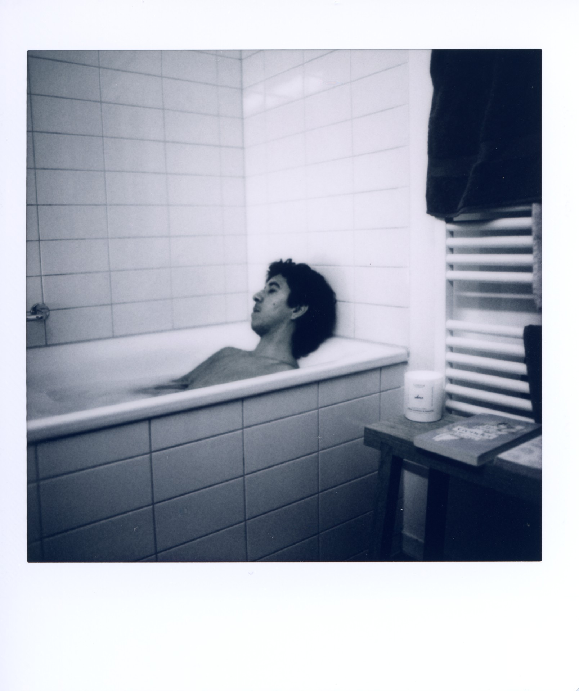
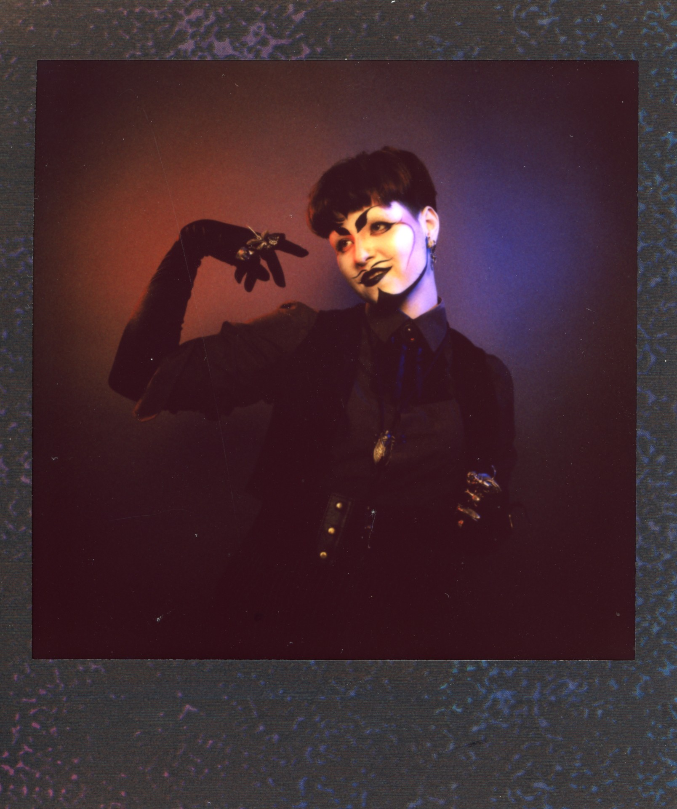
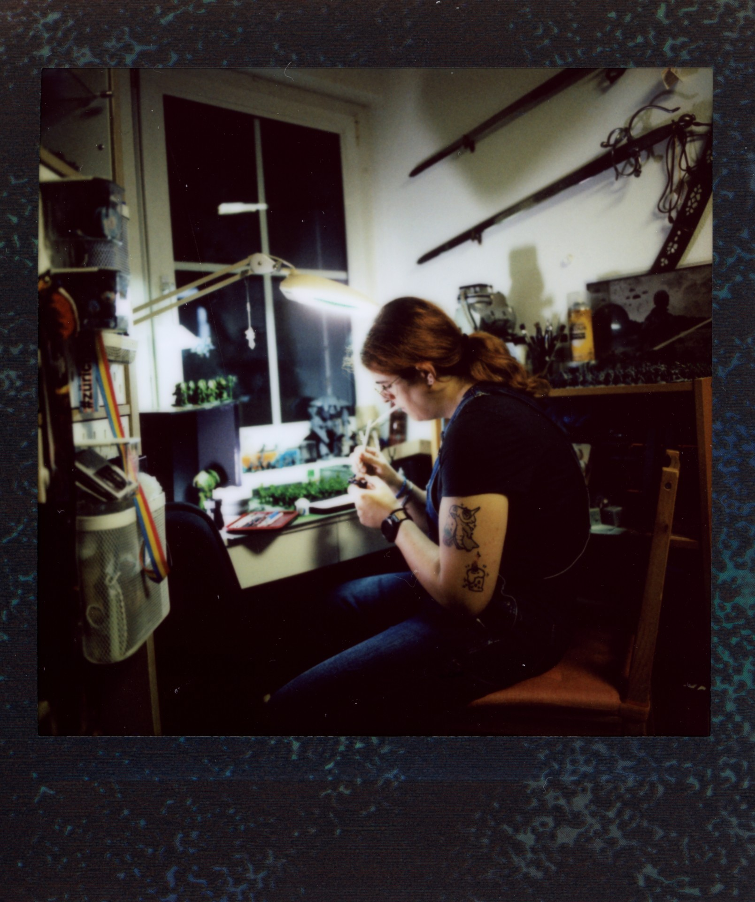
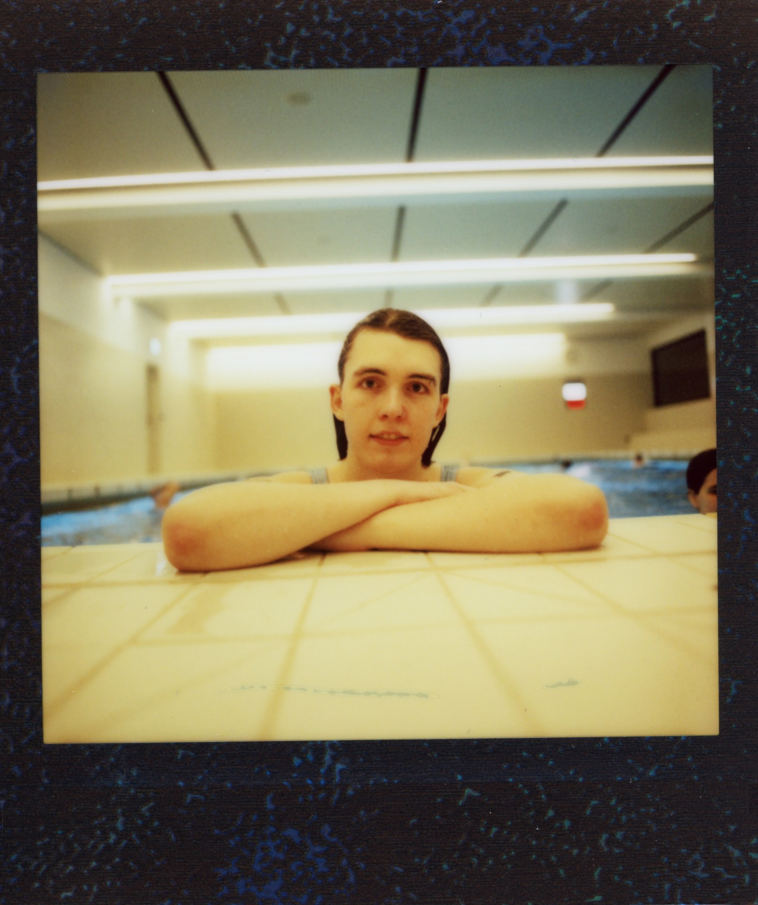
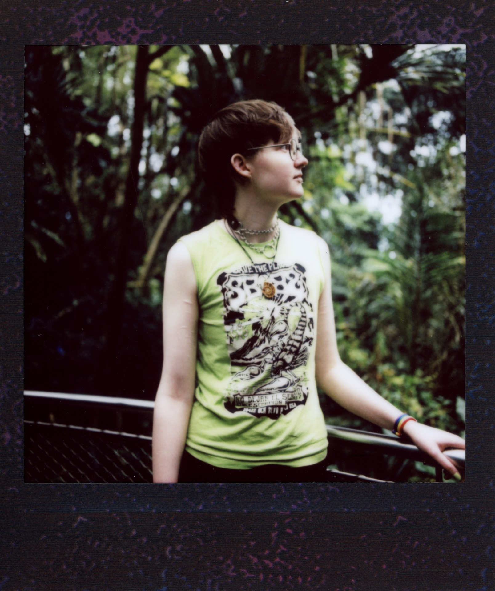
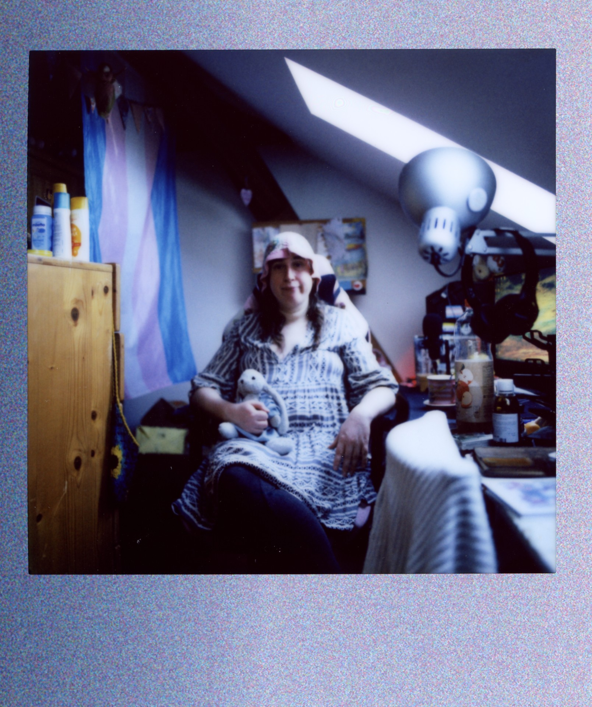
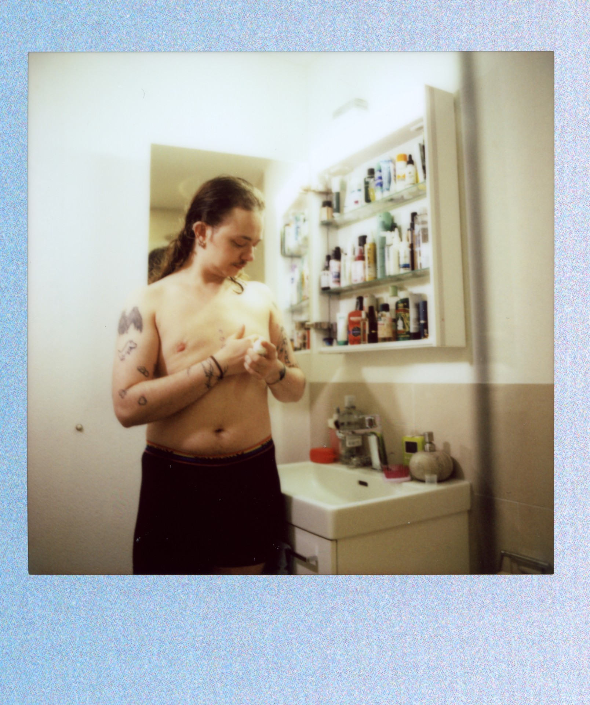
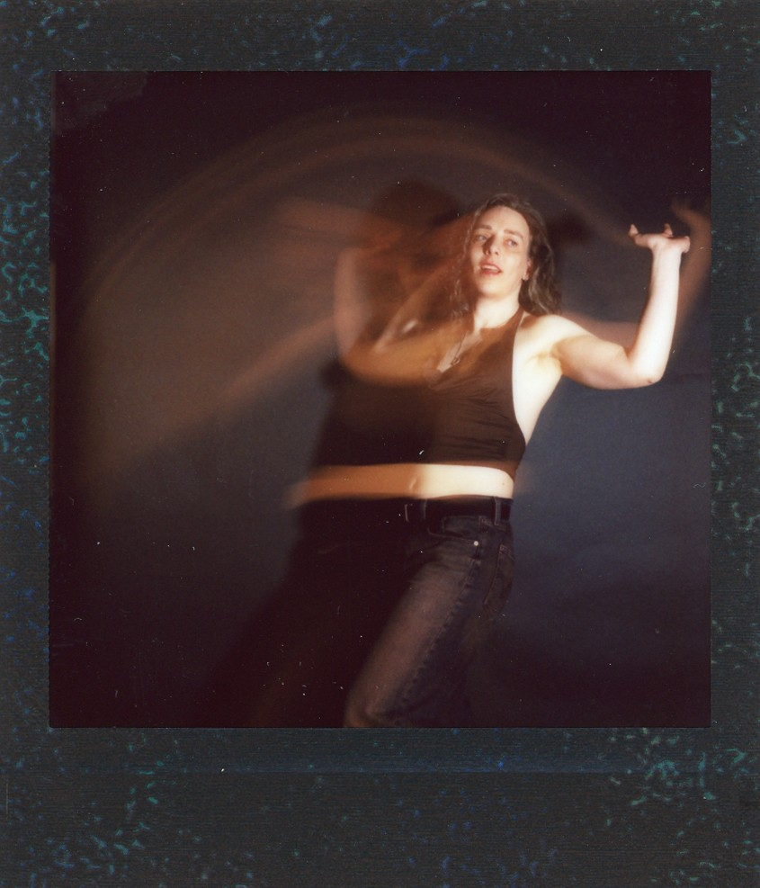
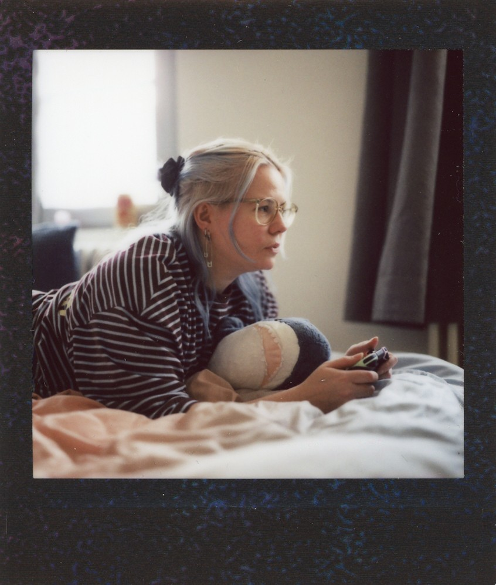
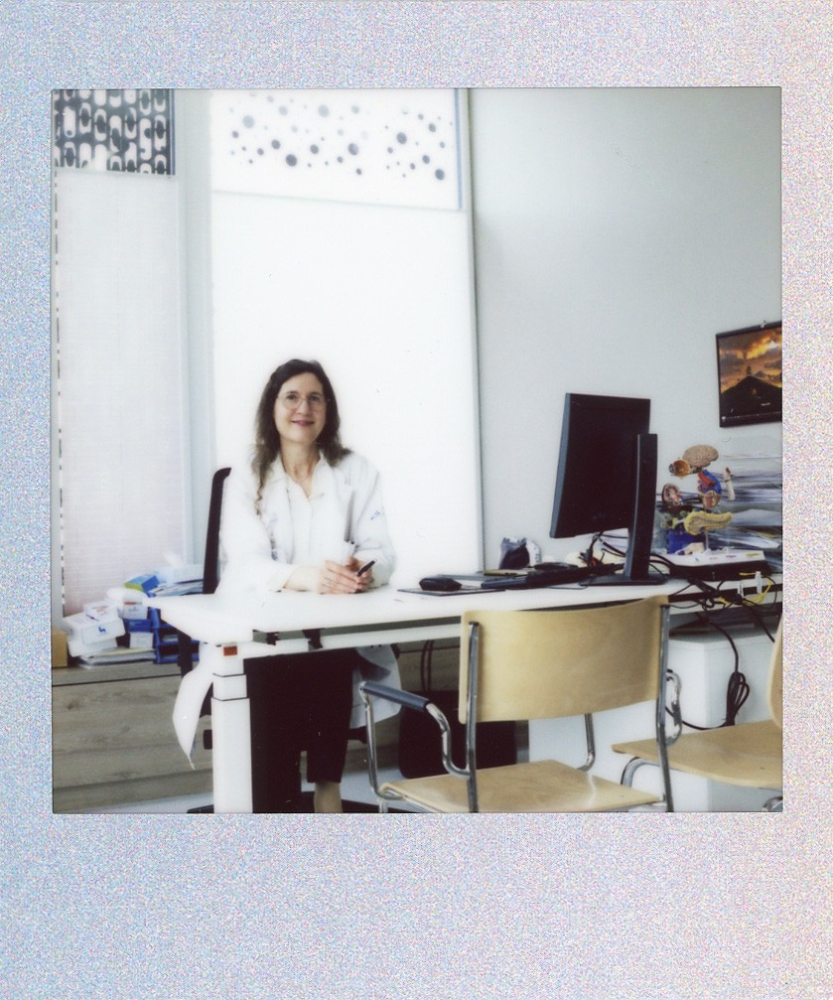
♥ Gigi ♥
| My Name | Mein Name | ||
| Gigi | |||
| Pronouns | Pronomen | ||
| Er / Ihm · He / Him | |||
| Age | Alter | ||
| 37 | |||
Where are we and what does your safe space mean?
In the water. Doesn’t matter if I am in a bath tub, the sea, swimming pool, river or lake. Water is a place where I can be myself, where I find peace and can feel my body through the water. Everything is flowing, all thoughts are gone.Wo sind wir, und was bedeutet dir dein Safe Space?
Im Wasser. Egal, ob Badewanne, Meer, Schwimmbad, Fluss oder See. Wasser ist ein Ort, an dem ich ich selbst sein kann, an dem ich Ruhe habe und meinen Körper durch das Wasser spüre. Alles fliesst, alle Gedanken sind weg.What does being queer mean to you?
It’s been a fight since day one, but also the privilege of knowing my very soul and finding self-love.Was bedeutet es für dich, Queer zu sein?
Es bedeutet Kampf seit Tag eins, aber auch das Privileg, meinen Kern sehr gut zu kennen und mich selbst zu lieben.What's important to me?
This Batman Shirt was my favourite clothing item, when I was small. With the Batman-T-Shirt I felt seen and understood. I didn’t want to be a princess; I wanted to be Batman.Was mir wichtig ist?
Das Batman-T-Shirt war mein Lieblingskleidungsstück, als ich klein war. Mit dem Batman-T-Shirt habe ich mich gesehen und verstanden gefühlt. Ich wollte keine Prinzessin sein, sondern Batman.♥ Dima ♥
| My Name | Mein Name | ||
| Dima | |||
| Pronouns | Pronomen | ||
| Er / Ihm · He / Him | |||
| Age | Alter | ||
| 21 | |||
Where are we and what does your safe space mean?
We are here today at the Zentrum Bildung in Baden. My comfort zone isn't actually this institute. It is myself. When I was asked where my safe space is, I was torn, because admittedly, most of the places where I felt safe were only temporary. As a queer person with parents who didn't support me or were even dangerous, I quickly looked for safety outside of my home. I looked for people I could call family, chosen families, safe places, people who taught me about the world and how to navigate it. Furthermore, I had to learn to understand myself and all my emotional baggage. Through all of that, my most consistent and ever-present safe space is myself. And I create a safe space for myself wherever I go. And if I don't, I know that I have to leave a place where I don't feel safe. I have learned that no one but myself can offer me complete safety. I cannot control my environment or the people around me, but I can control how I deal with it. Furthermore, I no longer look for validation and recognition from people whose advice I would never follow. I have learned to trust myself completely and to create a safe space within myself in order to be as authentic as possible. This means that I see the world quite differently and that my entire identity has more freedom because I have fewer internalized and rigid notions of gender. That then called into question everything I had been taught. Not just in terms of gender, but of the world as a whole.Wo sind wir, und was bedeutet dir dein Safe Space?
Wir sind heute im Zentrum Bildung in Baden. Meine Komfortzone ist eigentlich nicht dieses Institut. Es ist ich selbst. Als ich gefragt wurde, wo mein sicherer Ort (aka. Safespace) ist, war ich hin- und hergerissen, denn zugegebenermaßen waren die meisten Orte, an denen ich mich sicher fühlte, nur vorübergehend. Als queere Person mit Eltern, die mich nicht unterstützten oder sogar gefährlich waren, suchte ich schnell nach Sicherheit außerhalb meines Zuhauses. Ich suchte mir Menschen, die ich als Familie bezeichnen konnte, selbstgewählte Familien, sichere Orte, Menschen, die mir etwas über die Welt beibrachten und wie man sich in ihr zurechtfindet. Außerdem musste ich mich selbst und all meine emotionalen Altlasten verstehen lernen. Durch all das hindurch ist mein beständigster und immer gegenwärtiger sicherer Ort ich selbst. Und ich schaffe mir überall, wo ich hingehe, einen sicheren Ort. Und wenn nicht, weiß ich, dass ich einen Ort verlassen muss, an dem ich mich nicht sicher fühle. Ich habe gelernt, dass niemand außer mir selbst mir vollständige Sicherheit bieten kann. Ich kann meine Umgebung oder die Menschen um mich herum nicht kontrollieren, aber ich kann kontrollieren, wie ich damit umgehe. Außerdem suche ich nicht mehr nach Bestätigung und Anerkennung von Menschen, deren Rat ich niemals befolgen würde. Ich habe gelernt, mir selbst voll und ganz zu vertrauen und einen sicheren Ort in mir selbst zu schaffen, um so authentisch wie möglich zu sein. Das bedeutet, dass ich die Welt ganz anders sehe und dass meine gesamte Identität mehr Freiheiten hat, weil ich weniger verinnerlichte und festgefahrene Vorstellungen von Geschlecht habe. Das stellte dann alles, was mir beigebracht worden war, in Frage. Nicht nur in Bezug auf das Geschlecht, sondern auf die Welt als Ganzes.What does being queer mean to you?
As a demi-boy or non-binary trans-masculine person, I had something most people don't: the necessity and the privilege of deciding from scratch what my gender is to me. Since I have always existed outside of gender norms, the two binary categories never fit me, and I never felt 100% comfortable. Of course, despite this, I still have internalized and mediated gender ideals that are deeply rooted in me, but since I am genderqueer and my gender doesn't fit into the binary scheme anyway, I can question these ideals much more strongly. Because I viewed social norms more like an outsider, I wasn't part of the "play"; I didn't spend countless hours learning my lines and roles because I never fit into this "theater" anyway and therefore couldn't form a connection to it. This allowed me to form an opinion about it and choose from there. I chose my own character and my own lines. However, that can be isolating, as even people in my own community tend to be accidentally or intentionally ignorant regarding gender expression, gender identity, and gender. I don't blame them, as gender studies aren't as simple as "boy is XY" and "girl is XX." But I wish people would approach the topic with the same curiosity that I do. I often describe myself as boy!girl, girl!boy, butch, non-binary boy. My gender identity in this world limits me, as I have to move cautiously in most cis spaces; it can be dangerous depending on the people around me. But it is also my liberation.Was bedeutet es für dich, Queer zu sein?
Als Demi!Boy oder nicht-binäre trans-maskuline Person hatte ich etwas, was die meisten Menschen nicht haben: die Notwendigkeit und das Privileg, von Grund auf neu zu entscheiden, was mein Geschlecht für mich ist. Da ich schon immer außerhalb der Geschlechtsnormen lag, haben die beiden binären Kategorien nie auf mich gepasst, und ich habe mich nie zu 100 % wohlgefühlt. Natürlich habe ich trotzdessen immer noch verinnerlichte und vermittelte Geschlechterideale, die tief in mir verwurzelt sind, aber da ich genderqueer bin und mein Geschlecht ohnehin nicht in das binäre Schema passt, kann ich diese Ideale viel stärker hinterfragen. Da ich soziale Normen eher wie ein Außenstehender betrachtete, war ich nicht Teil des „Stücks”, ich verbrachte keine unzähligen Stunden damit, meine Texte und Rollen zu lernen, da ich sowieso nie in dieses „Theater” passte und daher keine Bindung dazu aufbauen konnte. So konnte ich mir eine Meinung darüber bilden und von dort aus wählen. Ich wählte meinen eigenen Charakter und meine eigenen Texte. Das kann allerdings isolierend sein, da selbst Menschen in meiner eigenen Community dazu neigen, versehentlich oder absichtlich ignorant gegenüber Geschlechtsausdruck, Geschlechtsidentität und Geschlecht zu sein. Ich mache ihnen keine Vorwürfe, da Gender Studies nicht so einfach sind wie „Junge ist XY” und „Mädchen ist XX”. Aber ich wünschte mir, dass die Menschen mit derselben Neugierde an das Thema herangehen würden wie ich. Ich beschreibe mich oft als Junge!Mädchen, Mädchen!Junge, Butch, nicht-binärer Junge. Meine Geschlechtsidentität in dieser Welt schränkt mich ein, da ich mich in den meisten Cis-Räumen vorsichtig bewegen muss, kann es je nach den Menschen in meiner Umgebung gefährlich sein. Aber sie ist auch meine Befreiung.What's important to me?
Also for the special items, figured it would make sense to explain the concept and how its tied together with my safespace: The special things I brought with me were my drag and my rings + jewelry. Both are powerful and passionate forms of self-expression and my gender identity. They embody the joy I feel, as well as the impact I want to make. Through my drag, I show people how beautiful things can be when you prioritize yourself and your expression over the fear of judgment.Was mir wichtig ist?
Ausserdem für das Spezielle Item macht es Sinn das Konzept zu erklären und wie es zusammenhängt mit meinem Safe-Space: Das Besondere, das ich mitgebracht habe, war mein Drag und meine Ringe + Schmuck. Beides sind für mich starke und leidenschaftliche Formen des Selbstausdrucks und meiner Geschlechtsidentität. Sie verkörpern die Freude, die ich empfinde, sowie die Wirkung, die ich damit erzielen möchte. Mit meinem Drag zeige ich den Menschen, wie schön Dinge sein können, wenn man sich selbst und seinen Ausdruck über die Angst vor Urteilen stellt.♥ Mia ♥
| My Name | Mein Name | ||
| Mia | |||
| Pronouns | Pronomen | ||
| Sie / Ihr · She / They | |||
| Age | Alter | ||
| 35 | |||
Where are we and what does your safe space mean?
We are at my home in the office/studio. This is the spot where I like to wind down when the world is just too much to bear with and I like to escape into different realities while painting and modeling.Wo sind wir, und was bedeutet dir dein Safe Space?
Wir sind hier bei mir zu Hause im Büro/Atelier. Das ist der Ort, an dem ich gerne abschalte, wenn mir die Welt einfach zu viel wird und ich beim Malen und Modellieren gerne in andere Realitäten entfliehe.What does being queer mean to you?
I define myself as a Demigirl (being Trans and Nonbinary) so it really depends on my mood and how I am feeling on that day. So being queer means I am finally feeling like my true self and do not have to hide anymore.Was bedeutet es für dich, Queer zu sein?
Ich definiere mich als Demigirl (trans und nicht-binär), daher hängt es wirklich von meiner Stimmung ab und wie ich mich an dem Tag fühle. Queer zu sein bedeutet für mich also, dass ich mich endlich wie mein wahres Ich fühle und mich nicht mehr verstecken muss.What's important to me?
This is my very first and oldest friend Teddy he is the same age as me. But he will always be at my side through all steps of my life.Was mir wichtig ist?
Das ist mein allererster und ältester Freund Teddy, er ist genauso alt wie ich. Aber er wird mir mein Leben lang bei jedem Schritt immer zur Seite stehen.♥ Lyra ♥
| My Name | Mein Name | ||
| Lyra | |||
| Pronouns | Pronomen | ||
| Sie / Ihr · She / They | |||
| Age | Alter | ||
| 22 | |||
Where are we and what does your safe space mean?
I’ve always felt safest when swimming, so my comfort zone is generally in or under the water :)Wo sind wir, und was bedeutet dir dein Safe Space?
Ich fühle mich schon immer beim Schwimmen am sichersten, daher ist meine Komfortzone allgemein in/unter Wasser :)What does being queer mean to you?
I was queer even before I came out as trans - first bi, then gay; bi again and now lesbian; being queer is nothing more than being straightforwardly myself, as far as I can understand it at the time (which is why it’s constantly growing and changing).Was bedeutet es für dich, Queer zu sein?
Ich war schon vor meinem Trans-Outing Queer - zuerst bi, dann schwul; wieder bi und jetzt lesbisch; Queer zu sein ist nichts mehr als unumwunden mich zu sein, so weit wie ich das zu der Zeit selbst verstehen kann (weshalb es konstant auch wächst und sich ändert).What's important to me?
My strawberry tattoo (from Celeste), which I got before I realized I was trans.Was mir wichtig ist?
Mein Erdbeer-Tattoo (von Celeste), welches ich vor der Erkenntnis meines Trans-Seins stechen lassen habe.♥ Neo ♥
| My Name | Mein Name | ||
| Neo | |||
| Pronouns | Pronomen | ||
| They / Them | |||
| Age | Alter | ||
| 22 | |||
Where are we and what does your safe space mean?
We’re at Zurich Zoo in the Masoala Hall. A peaceful place filled with plants and animals. To me those things mean a break, a calm within me, and the chance to be a spectator.Wo sind wir, und was bedeutet dir dein Safe Space?
Wir befinden uns im Zoo Zürich in der Masoala-Halle. Ein Ort der Stille, reich an Flora und Fauna. Das bedeutet für mich eine Pause vom Alltag, inneren Frieden und die Möglichkeit, einfach nur zuzuschauen.What does being queer mean to you?
It’s part of who I am, part of how I feel about myself and see myself. It affects my self-expression in positive ways since it is part of my identity. Being queer is like being for example Swedish, or whatever. It is a part of me that makes me into who I am. It is a part of my story and therefore something I will always carry with me.Was bedeutet es für dich, Queer zu sein?
Es ist ein Teil dessen, wer ich bin, ein Teil davon, wie ich mich fühle und wie ich mich selbst sehe. Es beeinflusst meinen Selbstausdruck auf positive Weise, da es Teil meiner Identität ist. Queer zu sein ist so, wie zum Beispiel schwedisch zu sein oder was auch immer. Es ist ein Teil von mir, der mich zu dem macht, wer ich bin. Es ist ein Teil meiner Geschichte und daher etwas, das ich immer bei mir tragen werde.What's important to me?
My beloved second-hand cockatiels (Please never ever keep birds alone)Was mir wichtig ist?
Meine geliebten Second-Hand-Nymphensittiche (Bitte haltet Vögel nie alleine)♥ Yaya ♥
| My Name | Mein Name | ||
| Yaya | |||
| Pronouns | Pronomen | ||
| Es / Ihr · She / Her · fae / faer | |||
| Age | Alter | ||
| 38 | |||
Where are we and what does your safe space mean?
My room is a safe space for me. I can retreat there when I'm overstimulated or feel rejected by the world. I always have snacks ready, cozy blankets to curl up in, contact with my friends all over the world through my computer, and the chance to distract myself from bad thoughts along with many very personal comfort items.Wo sind wir, und was bedeutet dir dein Safe Space?
Mein Zimmer ist für mich ein Safe Space. Ich kann mich dorthin zurückziehen, wenn ich überstimuliert bin oder mich von der Welt abgelehnt fühle. Ich habe immer Snacks bereit, gemütliche Decken in die ich mich kuscheln kann, über meinen Computer Kontakt zu meinen Freunden auf der ganzen Welt und die Möglichkeit mich von schlimmen Gedanken abzulenken und viele ganz persönliche Komfort-Items.What does being queer mean to you?
To me, being queer means being part of a minority that sticks together and supports one another through difficult times. It means being able to experience a world beyond normative ideas. To me, being trans means that I have fought for my identity and that I have gained experiences from perspectives that few people can combine, but it also means an ongoing struggle with aspects of my body that I would like to forget. To me, being aroace means living detached from the constraints and expectations of society, but also having to find a definition for relationships that is right for me and the people involved, since they weren't predefined for me. Being a demigirl means being able to live more freely from role models and stereotypes, but nevertheless constantly finding myself confronted with those very same stereotypes.Was bedeutet es für dich, Queer zu sein?
Queer zu sein, bedeutet für mich, Teil einer Minderheit zu sein, die zusammen hält und sich durch schwierige Zeiten unterstützt. Es bedeutet für mich eine Welt jenseits der normativen Vorstellungen erleben zu können. Trans zu sein bedeutet für mich, dass ich für meine Identität gekämpft habe und dass ich Erfahrungen aus Perspektiven gemacht habe, die nur wenige Menschen vereinen können, aber bedeutet für mich auch eine noch andauernde Auseinandersetzung mit Aspekten meines Körpers, die ich gerne vergessen würde. Aroace zu sein bedeutet für mich, losgelöst von Zwängen und Erwartungen der Gesellschaft zu leben, aber auch, für Beziehungen eine Definition finden zu müssen, die für mich und die beteiligten Personen richtig ist, da sie mir nicht vorgegeben wurden. Ein Demigirl zu sein, heisst für mich, mich freier von Rollenbildern und Stereotypen ausleben zu können, aber mich dennoch immer wieder mit genau diesen Stereotypen konfrontiert zu sehen.What's important to me?
A very important companion in my life is my plush bunny Luna (she/her), who accompanies me through depression, transition, blossoming, and everything in between; she never judges and is always there for me. Even if she can't always help, she always believes in me, does her best, and looks sweet and cuddly while doing it.Was mir wichtig ist?
Ein ganz wichtiger Begleiter in meinem Leben ist mein Plüschhäschen Luna (sie/ihr), die mich durch Depression, Transition, Aufblühen und alles was dazwischen liegt begleitet, niemals urteilt und immer für mich da ist. Auch wenn sie nicht immer helfen kann, sie glaubt immer an mich, tut ihr Bestes und sieht dabei süss und knuffig aus.♥ Charly ♥
| My Name | Mein Name | ||
| Charly | |||
| Pronouns | Pronomen | ||
| xier / keine / they / er · xier / none / they / him | |||
| Age | Alter | ||
| 29 | |||
Where are we and what does your safe space mean?
We are in our Bathroom. In the past it was a place where I felt the pressure to conform to patriarchal, societal beauty standards, and where seeing my naked body would regularly cause me to break down from gender dysphoria. In that place I weighed myself, desperately pinched my stomach, hurt myself, puked or even took drugs, because I couldn't stand being myself and I couldn't handle the feeling of being in my own body. Today it's a place where I take care of myself, massage, gently moisterize and can look in the mirror. I don't like particularly how I currently look like, but now I recognize myself as Charly in the mirror and I feel like I've found my place. Every morning I give myself the promise that I am going to take care of my body no matter what I look like. In the past the bathroom was a nightmare, today it's a Safe Space.Wo sind wir, und was bedeutet dir dein Safe Space?
Wir sind in meinem Badezimmer. Früher ein Ort an dem ich den Druck verspührt habe patriarchalen, gesellschaftlichen Schönheitsidealen zu entsprechen und wo mich regelmässig meine Gender-Dysphorie beim Anblick meines nackten Körpers hat zusammenbrechen lassen. Ein Ort wo ich mich gewogen habe, verzweifelt an meinem Bauch herumgekniffen habe, mich verletzt habe, erbrochen habe oder sogar Drogen genommen habe, weil ich es in mir und meinem Körper nicht ausgehalten habe. Heute ist es ein Ort an dem ich mich pflege, massiere, mich behutsam eincreme und in den Spiegel schauen kann. Mir gefällt nicht unbedingt wie ich aussehe, aber ich erkenne mich selbst jetzt als Charly im Spiegel und ich fühle mich angekommen. In meinem Badezimmer gebe ich mir jeden Morgen selbst das Versprechen, dass ich mir und meinem Körper Sorge tragen werde, egal wie ich aussehe. Früher war mein Badezimmer ein Angstraum, heute ist es eine Wohlfühlzone.What does being queer mean to you?
Nonbinary is just a word that describes my gender Identity. It's neutral (just like male and female as well) and that's why it doesn't hold a special purpose. Being Queer, on the other hand , is something I see as a political act. It's more than just about your own identity. It means standing up for yourself and other marginalized people, being visible, and not denying yourself (or others) just to be more accepted by mainstream society. Being queer means questioning all social norms and standing in solidarity with everyone who doesn't fit them and is discriminated against because of it. I am nonbinary, and I have chosen to be queer.Was bedeutet es für dich, Queer zu sein?
Nonbinary ist einfach ein Wort, das meine Geschlechtsidentität beschreibt. Es ist neutral (so wie männlich und weiblich auch) und es hat darum keine spezielle Bedeutung. Queer zu sein, hingegen, sehe ich als einen politischen Akt an. Er geht über die eigene Identität hinaus. Er bedeutet für sich und andere marginalisiere Menschen einzustehen, sichtbar zu sein, sich nicht selbst (oder andere) zu verleugnen nur um in der Mehrheitsgesellschaft akzeptiert(er) zu werden. Queer sein bedeutet alle gesellschaftlichen Normen zu hinterfragen und sich mit allen zu solidarisieren, die ihnen nicht entsprechen und aufgrund dessen diskriminiert werden. Nonbinary bin ich und Queer habe ich mich entschieden zu werden.What's important to me?
My cats Abbey and George (both siblings, 13 years old) — for almost half my life, they’ve been one of the reasons I get up every morning. I skipped school to take care of them when they were sick, I rarely go out so they aren't alone in the apartment, and I work from home as often as possible to spend more time with them. They are my best friends; they are family.Was mir wichtig ist?
Meine Katzen Abbey und George (beides Geschwister, 13 J.) - seit beinahe der Hälfte meines Lebens sind sie einer der Gründe wieso ich jeden Morgen aufstehe. Ich habe die Schule geschwänzt um sie zu pflegen als sie krank waren, ich gehe selten in den Ausgang, damit sie nicht alleine in der Wohnung sind und ich mache so oft wie möglich home office um mehr Zeit mit ihnen zu verbringen. Sie sind meine besten Freund * innen, sie sind Familie.♥ Simi ♥
| My Name | Mein Name | ||
| Simona / Simi | |||
| Pronouns | Pronomen | ||
| Sie / Es · She / It | |||
| Age | Alter | ||
| 41 | |||
Where are we and what does your safe space mean?
Dancing, which is something I can do anywhere I feel accepted and comfortable. But I’m usually at Viertel Klub in Basel because the crowd and the lineup there are very diverse—I’ve actually felt a bit out of place at strictly queer parties quite a few times. For many reasons, not just because I’m trans, dancing is radical self-acceptance for me and a very intimate way of expressing myself through my body. And that’s why I draw so much power, strength, and self-confidence from it, because the world out there is still a long way from being free of discrimination.Wo sind wir, und was bedeutet dir dein Safe Space?
Tanzen, was überall geht, wo ich mich akzeptiert und wohl fühle. Aber meistens bin ich im Viertel Klub in Basel, weil dort ein sehr diverses Publikum und Program ist - an rein queeren Parties bin ich mir schon öfters etwas fehl am Platz vorgekommen. Tanzen ist für mich aus vielen Gründen, nicht nur dass ich trans bin, radikale Selbstakzeptanz und eine sehr intime Art, mich durch meinen Körper auszudrücken. Und darum ziehe ich auch sehr viel Kraft, Stärke und Selbstvertrauen daraus, weil die Welt da draussen ist halt immer noch weit entfernt von diskrimierungsfrei.What does being queer mean to you?
For me, being queer is much more than just being trans, enby, bisexual, and aromantic. I am also neurodiverse and stand quite far from the average in a few other areas. On one hand, all of this is associated with a lot of suffering for me; it took me decades to clear out all the internalized hate and social ostracization and to admit to myself that my existence is worth living. But on the other hand, such a radical break from social norms and expectations is extremely liberating. Through my openly lived existence, I erode the foundations of this patriarchal society and become a clown, a subversive prankster with subtle power. And from this foolish freedom, I draw a great deal of strength to confront the everyday queerphobic hate that is still so deeply anchored in our society.Was bedeutet es für dich, Queer zu sein?
Für mich ist queer sein viel mehr als nur dass ich trans, enby, bisexual und aromatisch bin. Ich bin auch neurodiverse und stehe in ein paar anderen Bereichen ziemlich weit vom Durchschnitt. Einerseits ist das alles für mich mit sehr viel Leid verbunden, ich habe Jahrzehnte gebraucht, um all den internalisierten Hass und die gesellschaftliche Ächtung auszumisten und mir einzugestehen, dass meine Existenz lebenswert ist. Aber anderseits ist ein derart radikaler Bruch mit sozialen Normen und Erwartungen extrem befreiend. Durch meine offen gelebte Existenz erodiere ich die Grundfesten dieser patriachalen Gesellschaft und werde zum Clown, zum subversiven Spassvogel mit subtiler Macht. Und aus dieser närrischen Freiheit schöpfe ich sehr viel Kraft, um dem alltäglichen queerphobe Hass, der immer noch so tief in unserer Gesellschaft verankert ist, entgegenzutreten.What's important to me?
My red notebook with my own personal thoughts.Was mir wichtig ist?
Mein rotes Notizbuch mit meinen persönlichen Gedanken.♥ Melo ♥
| My Name | Mein Name | ||
| Melo | |||
| Pronouns | Pronomen | ||
| Keine · None / They / Them | |||
| Age | Alter | ||
| 35 | |||
Where are we and what does your safe space mean?
We are at our home, where I recently moved in. It means everything to me to have a homely sanctuary, where I can relax fully and where I feel safe. Here are all my hobbies and things. Since I've been living alone again after my time in a shared apartment, I really enjoy furnishing everything according to my own taste and tailored to my needs. I love that everything stays exactly where I left it when I walk out the door.Wo sind wir, und was bedeutet dir dein Safe Space?
Wir sind bei mir Zuhause, in das ich erst kürzlich gezogen bin. Es bedeutet mir alles, einen heimeligen Rückzugsort zu haben, in dem ich mich richtig erholen kann und mich sicher fühle. Hier sind alle meine Hobbies und meine Sachen. Seit ich nach einer WG-Zeit wieder alleine wohne, geniesse ich es, alles nach meinem Geschmack und auf meine Bedürfnisse angepasst einzurichten. Ich mag es, dass alles so liegen bleibt, wie ich es hinterlassen habe, wenn ich die Wohnung verlasse.What does being queer mean to you?
Either denying who I am and living in a system that wasn't made for me, or fighting every single day—standing up for myself and the community, educating others, constantly questioning myself, only to end up even more convinced every time that I am queer. For me, it means that my body, my existence, and my actions are political. Being queer is exhausting. But being queer is also liberating, beautiful, so incredibly diverse, vibrant, emotional, and above all, indispensable and necessary for the existence of so many damn people. Being queer saves lives!Was bedeutet es für dich, Queer zu sein?
Entweder mich selbst zu verleugnen und in einem System zu leben, welches nicht für mich gemacht ist, oder tagtäglich zu kämpfen, für mich und die Community einzustehen, aufzuklären, mich ständig zu hinterfragen, nur um jedes Mal noch überzeugter davon zu sein, dass ich queer bin. Es heisst für mich, dass mein Körper, meine Existenz und mein Handeln politisch ist. Queer sein ist anstrengend. Queer sein ist aber auch befreiend, wunderschön, so unglaublich vielfältig, lebendig, emotional und vor allem unabdingbar und notwendig, für die Existenz von verdammt vielen Menschen. Being queer saves lives!What's important to me?
Everything you can find at my place :)Was mir wichtig ist?
Alles, was du bei mir Zuhause findest :)♥ Dr. Egloff ♥
| My Name | Mein Name | ||
| Dr. med. Michelle Egloff | |||
| Pronouns | Pronomen | ||
| Sie / Ihr · She / Her | |||
| Age | Alter | ||
| 54 | |||
Wer ist Dr. med. Michelle Egloff
Dr. med. Michelle Egloff ist Leitende Ärztin und Leiterin der Abteilung Endokrinologie/Diabetologie am Kantonsspital Baden (KSB). Sie ist seit November 2015 am KSB, hat ihr Staatsexamen 1998 in der Schweiz abgelegt, und ihre Facharztausbildung in Endokrinologie/Diabetologie am Universitätsspital Genf absolviert. Zu ihren Spezialgebieten gehört explizit die Transgendermedizin — sie betreut Transpersonen mit Hormontherapien.Erst mit 52 Jahren hat sie selbst die Transition vollzogen und ist von Dr. Michael Egloff zu Michelle Egloff geworden. Laut ihrem eigenen Bericht im TalkTäglich-Interview auf TeleZüri (Januar 2024) spürte sie schon in der Kindheit, dass sie sich dem weiblichen Geschlecht zugehörig fühlt — aber ohne Vorbilder, ohne Informationen, und in einer Zeit (80er-Jahre) in der das Thema in der Öffentlichkeit so gut wie nicht vorkam. Sie hat jahrzehntelang eine Familie aufgebaut, geheiratet, mit ihrem inneren Wunsch gelebt — bis vor etwa drei Jahren der Leidensdruck so gross wurde, dass sie sagte: „Jetzt muss ich es machen."
Heute ist sie — obwohl von sich selbst als introvertiert beschrieben — bewusst öffentlich sichtbar, um zu zeigen, dass Transpersonen ganz normale Menschen mit normalen Berufen und Hobbys sind. Ihre Vorbildfunktion ist für sie eine der Hauptmotivationen, überhaupt in der Öffentlichkeit über ihre Geschichte zu sprechen.
Full Interview
[Faye]Wer sind Sie, welche Pronomen verwenden Sie, und was machen Sie hier?
[Dr. Egloff]
Ich bin Michelle Egloff. Meine Pronomen sind sie/ihr. Ich fühle mich als Frau. Ich habe mich schon immer als Frau gefühlt, aber die Rolle der Frau effektiv erst im zarten Alter von 51 bis 53 wirklich übernommen.
Jetzt lebe ich das seit gut zwei Jahren, fast zweieinhalb Jahren, voll und ganz. Ich fühle mich sehr wohl in dieser Rolle.
Ich bin von Beruf Ärztin, Fachärztin für Endokrinologie, Diabetologie und allgemeine Innere Medizin. Ich bin im Kantonsspital Baden Leiterin der Abteilung Endokrinologie und behandle neben vielen anderen Erkrankungen auch in einer Spezialsprechstunde Personen mit Geschlechtsinkongruenz sowie Fragen zur Hormontherapie.
Ich bin verheiratet. Ich habe zwei mittlerweile erwachsene Kinder, 22 und 20 Jahre alt, und wohne in Wettingen im Kanton Aargau.
[Faye]
Wo sind wir und was bedeutet dieser Ort für Sie?
[Dr. Egloff]
Wir sind hier an meinem Arbeitsplatz im Kantonsspital Baden, in der Abteilung Endokrinologie, in meinem Büro, das auch Sprechstundenzimmer ist.
Es ist natürlich ein Ort, an dem ich sehr viel Zeit verbringe, weil ich lange Arbeitszeiten habe. Es ist aber auch ein Ort, an dem ich eine sehr interessante Rolle habe. Ich bin eigentlich auch eine Interviewerin meiner Patientinnen und Patienten. Wir führen hier Sprechstunden, das heisst, wir reden primär über Krankheiten, aber auch über das Leben der Menschen. Viele der Erkrankungen, die ich behandle, wie Adipositas, Diabetes, Bluthochdruck, Schilddrüsenerkrankungen, Hormonerkrankungen generell oder auch Geschlechtsinkongruenz, betreffen nicht nur ein Symptom oder ein Organ, sondern das ganze Leben der Menschen.
Das ist sehr spannend. Jede Person ist individuell spannend. Ich höre in diesem Raum sehr viele interessante Geschichten. Wir haben sehr viele interessante Gespräche, zum Teil über Gott und die Welt. Das ist wirklich ein Raum, in dem viel Leben stattfindet. Auch viel Drama. Ich habe da hinten ein Päckchen mit Taschentücher. Das hole ich nicht so selten hervor, denn Patientinnen und Patienten erzählen mir aus Freude oder aus Verzweiflung sehr intime Dinge, die sie sonst vielleicht niemandem erzählen würden. Das berührt mich und gibt mir auch einen besonderen Auftrag, sie in diesen intimen Bereichen zu begleiten. Das erfüllt mich mit Ehrfurcht gegenüber den Patientinnen und Patienten und ihren Geschichten. In diesem Raum passiert sehr viel Leben, und vieles von dem, was in diesen vier Wänden geschieht, bleibt auch in diesen vier Wänden. Besonders wichtig ist mir, dass Transpersonen wissen, dass das hier ein Safe Space ist.
Hier können sie mir alles erzählen, und wir können alles besprechen. Hier darf man so sein, wie man ist und wie man sich fühlt. Das ist mir sehr wichtig. Der Raum ist auch ein Ort, an dem ich Besprechungen mit meinen Mitarbeiter*innen durchführe und viel Büroarbeit erledige, auch Dinge, die ich nicht immer gern mache. Aber es ist hauptsächlich mein Raum, in dem ich meine Tage verbringe. Mein Privatleben gibt es natürlich auch, aber das findet klar ausserhalb dieses Raums statt.
[Faye]
Verständlich, dass man Arbeit und Persönliches dort trennt.
[Dr. Egloff]
Ja, das ist so. Auf der anderen Seite kann man das nie hundertprozentig trennen, wenn man selbst trans ist und Transpatientinnen und -patienten behandelt. Ich finde es auch einen Vorteil, dass ich diese Erfahrung selbst mache oder gemacht habe. So kann ich aus meiner eigenen Erfahrung berichten.
Ich mache eigentlich mehr als nur eine endokrinologische Beratung. Bei Personen mit Geschlechtsinkongruenz mache ich auch Peer-Beratung, und Coaching ist mir ebenfalls wichtig. Ich denke, das ist ein Mehrwert, weil ich aus meiner eigenen persönlichen Erfahrung heraus begleiten kann, im Unterschied zu anderen Berufskolleginnen, die das in dieser Form nicht können. Sie machen ihre Arbeit auch gut, aber ich denke, dass ich hier noch mehr leisten kann und will. Mir ist wichtig, dass die Menschen an den richtigen Ort kommen, richtig behandelt werden und über Dinge sprechen können, über die sie mit einer Ärztin oder einem Arzt, die oder der selbst nicht betroffen ist, vielleicht nicht sprechen würden.
Darum kann ich das nicht ganz voneinander trennen. Ich habe auch Freundinnen und Kolleginnen, die trans sind und nach ihrer Transition sagen: Ich möchte die ganze Transdiskussion jetzt auf die Seite stellen. Ich lebe jetzt in meiner Rolle als Mann oder als Frau und möchte eigentlich nicht mehr ständig mit Trans-Themen befasst sein. Natürlich spreche ich auch über solche Themen, aber bei mir ist es so, dass ich beruflich automatisch damit zu tun habe. Deshalb kann ich das nicht einfach auf die Seite legen. Ich finde es aber auch spannend genug, dass ich es gar nicht ganz aufgeben möchte.
[Faye]
Sie haben sich ja als Endokrinologin oder Diabetologin spezialisiert und machen das schon seit Längerem. Wieso gerade dieses Feld?
[Dr. Egloff]
Meine Karriere ist nicht immer ganz gradlinig verlaufen, was ich sowohl positiv als auch negativ sehen kann. Ich bereue aber nicht, was ich gemacht habe.
Ich habe mit Chirurgie angefangen, weil ich Chirurgin werden wollte. Danach ging ich in die Innere Medizin mit der Absicht, Onkologin zu werden und also in der Krebstherapie zu arbeiten. Das habe ich zum Teil auch gemacht, aber die Stellensituation war damals so schwierig, dass ich das vorübergehend aufgeben musste.
Dann habe ich die Fachspezialisierung Allgemeine Innere Medizin gemacht und lange in diesem Bereich gearbeitet, als Oberärztin hier im Kantonsspital Baden, über sieben Jahre. Während dieser Zeit wollte ich mich aber trotzdem weiter spezialisieren. Dann ergab sich, dass die Fachrichtung Endokrinologie und Diabetologie im Kantonsspital noch nicht vertreten war, zusammen mit dem Arzt, der die Praxis in Dättwil betrieben hat. Ich habe mich dann bemüht, die Weiterbildung in diesem Fachgebiet zusätzlich zu machen, bin dafür nach Genf gegangen und kam 2015 wieder zurück. Danach habe ich das, was ich vorher schon gemacht hatte, weiter aufgebaut: die Sprechstunde für Endokrinologie und Diabetologie sowie die Abteilung, die ich jetzt weiter ausbaue.
[Faye]
Sie haben im TV-Interview gesagt, dass Sie beim Aufwachsen nicht wirklich Vorbilder hatten, weder in den Medien noch anderswo.
Jetzt sind Sie aber sicher als Ärztin und auch als Person eine Inspiration für andere. Haben Sie diese Rolle bewusst übernommen, oder ist das einfach passiert?
[Dr. Egloff]
Ich habe das nicht bewusst gemacht. Es ist einfach so, dass ich als Ärztin, die Transpatientinnen und -patienten behandelt, sichtbar bin. Damit habe ich automatisch in gewisser Weise auch eine Vorbildfunktion, auch als Kaderärztin. Ich mache das aber auch gern.
Ich habe sehr von Menschen profitiert, die mir gezeigt haben, dass trans sein auch etwas Positives sein kann. Dass es etwas ist, für das man sich nicht schämen oder genieren muss. Von solchen Vorbildern habe ich in den letzten fünf bis sechs Jahren profitiert, seit ich solche Menschen kennengelernt habe. Und das möchte ich auch gern weitergeben. Ich suche diese Rolle nicht bewusst, aber wenn ich für andere ein Vorbild sein kann, dann bin ich das gern.
[Faye]
Es fällt immer wieder auf, dass Sie eher introvertiert sind. Sie sind aber trotzdem in einer ziemlich öffentlichen Position als Ärztin oder Oberärztin und haben Ihre Geschichte sehr offen kommuniziert.
Warum ist es Ihnen wichtig, das auch öffentlich zu machen? Oder ist das eher zufällig passiert?
[Dr. Egloff]
Aus Versehen ist es eigentlich nicht passiert. Es war schon der Plan, öffentlich zu sein, zumindest innerhalb des Kantonsspitals. Ich bin seit etwa 15 Jahren Mitarbeiterin des Kantonsspitals, und dadurch kennen mich sehr viele Leute. Ich habe das von Anfang an offen kommuniziert, damit alle wissen: Ich mache das, ich mache das gern, und es ist gut, dass ich das mache. Also ganz bewusst positiv.
Vor allem wollte ich verhindern, dass hintenherum Gerede entsteht. Wenn Personen mit einem gewissen Bekanntheitsgrad in einer Institution etwas tun und es nicht klar kommunizieren, dann entstehen schnell Geschichten. Das wollte ich von Anfang an nicht. Deshalb bin ich offensiv damit umgegangen und habe gesagt: Ich will, dass die Leute informiert sind, dass sie es einordnen können und dass einfach alle Bescheid wissen. Ich glaube, das ist mir gut gelungen. Ich habe auch sehr viel Unterstützung aus meinem Umfeld im Spital erhalten, besonders von der Abteilung für Kommunikation, die mich bei diesem Vorhaben sehr unterstützt hat. Und ich glaube, dass es damals im Dezember 2023 sehr gut abgelaufen ist.
[Faye]
Das ist mega schön.
Sie hatten ja die Möglichkeit, das Büro oder auch die Abteilung mit aufzubauen.
Hätte sich dafür kulturell, sprachlich oder räumlich etwas stark verändern müssen, damit es sich für Sie auch wie ein Safe Space anfühlt?
[Dr. Egloff]
Ich glaube, ein Safe Space entsteht hauptsächlich durch Menschen, die entsprechend informiert sind, entsprechend kommunizieren und auch das nötige Verständnis für die Materie mitbringen. Ich habe mit meinem Team schon vorher stark daran gearbeitet, dafür zu sensibilisieren, was es bedeutet, mit Geschlechtsinkongruenz umzugehen. Ich hatte ja schon vorher Transpatientinnen und -patienten behandelt. Ich glaube, meine Abteilung ist sehr gut darauf eingestellt.
Ein Safe Space entsteht durch die Menschen, die da sind, zuhören, die Patientinnen und Patienten verstehen und auf ihre Wünsche und Bedürfnisse eingehen können. Und die wissen, worum es geht.
Ich glaube, das ist der wichtigste Punkt; grosse bauliche Massnahmen braucht es nicht. Die Zimmer sind ohnehin relativ schalldämpfend, sodass das, was man hier bespricht, hinter verschlossenen Türen bleibt. Es sind die Menschen, die den Unterschied ausmachen.
Ich war bei der Entwicklung der Abteilung von Anfang an dabei. Am Anfang hatten wir Sprechstunden im Hauptgebäude. Dann wurde 2018 das Partnerhaus gebaut, und es ging darum, dieses zu füllen. Man hat das Partnerhaus mit externen Partnern gefüllt (Lungenliga, Orthopädiewerkstatt etc.) und zusätzlich mit ambulanten KSB-eigenen Abteilungen. Meine Abteilung konnte sich dort ausbreiten und weiterentwickeln.
[Faye]
Wie Sie schon gesagt haben, sind Sie für viele Patientinnen und Patienten ein Safe Space.
Aber wenn Sie selbst, nicht als Ärztin, einen Safe Space brauchen: Wohin ziehen Sie sich zurück?
[Dr. Egloff]
Ich bin in der glücklichen Lage, dass ich mich so, wie ich bin, eigentlich überall zeigen kann und mich überall wohlfühle, wo ich mich generell als Person wohlfühle, unabhängig davon, ob es um trans sein geht oder nicht.
Ich versuche überall, wo ich bin, gute Beziehungen mit den Menschen zu pflegen. Viele Leute wissen auch ausserhalb des Spitals über meine Geschichte Bescheid und akzeptieren das sehr gut. Ich fühle mich eigentlich überall sicher.
Das freut mich und gibt mir auch Selbstsicherheit, sodass ich nicht überlegen muss, wo ich sein darf und wo nicht. Ich weiss, dass ich privilegiert bin, denn viele andere Transpersonen haben dieses Glück nicht und können sich nicht so frei bewegen und entfalten.
Aber effektiv ist es so: Ich fühle mich überall safe. Natürlich gibt es Orte, an denen ich besonders gern bin, einfach weil es dort schön ist und ich mich als Person wohlfühle.
Das ist bei mir zu Hause mit meiner Familie; wir haben ein wunderschönes Haus. Oder wenn ich mit Freundinnen und Kolleginnen ausgehe, ins Restaurant oder Kaffee trinken gehe. Auch in der Natur gibt es in meiner Umgebung sehr schöne Orte, an denen ich mich gern aufhalte und an denen ich sagen kann: Das ist ein schöner Ort mit einer schönen Aussicht, und ich fühle mich dort wohl.
[Faye]
Sie befassen sich ja schon länger mit dem Transgender-Thema und mit Medizin, und als Ärztin haben Sie vielleicht noch einmal einen etwas anderen Blick darauf.
Was hat sich Ihrer Meinung nach in den letzten 15 Jahren verändert, nicht nur in der Medizin, sondern ganz allgemein?
[Dr. Egloff]
In Bezug auf das Trans-Thema glaube ich, dass sich am meisten verändert hat, dass es sichtbarer geworden ist. Früher hat man vereinzelt Transpersonen in den Medien gesehen. Das wurde damals fast so dargestellt, als wäre es etwas Exotisches oder Spezielles. Transidentität wurde wie eine Ausnahmeerscheinung präsentiert.
Mittlerweile gibt es viel mehr Medienberichte über Transpersonen, und vor allem darüber, dass das ganz normale Menschen sind, mit normalen Hobbys und einem normalen Alltag. Nicht zwingend Dragqueens oder besonders auffällige Selbstdarstellerinnen. Ich glaube, das hat dazu beigetragen, dass die breite Masse weiss: Das gibt es.
Viele Menschen kennen heute jemanden aus ihrem Umfeld oder aus den Medien. Dadurch ist es für die meisten nicht mehr etwas völlig Unbekanntes, was vor zwanzig Jahren noch ganz anders war. In der Medizin gibt es ebenfalls immer mehr Menschen, die sich mit dem Thema befassen, weil immer mehr Transpersonen sichtbar werden und medizinische Hilfe suchen, psychologisch, psychiatrisch und auch im somatisch-medizinischen Bereich. Das führt automatisch dazu, dass es mehr Fachpersonen gibt, die solche Menschen behandeln. Entsprechend hat sich auch das Behandlungsparadigma verändert.
Früher hat man oft einfach das gemacht, was man eben gemacht hat, und die Medikamente eingesetzt, die vorhanden waren. Heute schauen wir viel stärker darauf, welche Medikamente für diese Population spezifisch geeignet sind. Wir haben auch Richtlinien erarbeitet.
Ich war selbst letztes Jahr an einer Arbeit beteiligt, bei der wir für die Schweizerische Gesellschaft für Endokrinologie und Diabetologie Empfehlungen zur Hormonbehandlung erwachsener Transpersonen erarbeitet haben. Das ist bereits publiziert worden.
Es gibt immer mehr solche Behandlungsrichtlinien, damit man nicht einfach irgendetwas macht, sondern weiss, was gut ist, was richtig ist und worauf man achten muss. Was weiterhin ein Problem ist: Viele Fachpersonen in diesem Bereich tun noch immer so, als würde man mit der Behandlung von Transpersonen etwas Widernatürliches machen.
Es gibt noch immer eine gewisse Hemmung, fast so, als würde man heimlich etwas tun. Man muss oft doppelt, dreifach und vierfach absichern, was in anderen medizinischen Bereichen nicht in diesem Ausmass der Fall ist.
Natürlich ist es richtig, sorgfältig abzuklären, sauber zu identifizieren, ob eine Person trans ist, und zu prüfen, ob die Behandlung passend ist.
Aber man muss auch sehen: Diese Person hat ein gesundheitliches Problem und braucht eine Behandlung. Es gibt keine wirkliche Alternative dazu, ausser die Behandlung so zu gestalten, dass sie sowohl den individuellen Bedürfnissen als auch dem individuellen Risikoprofil der Person entspricht.
[Faye]
Dann vielleicht noch etwas zur Zukunft: Was müsste sich in der Gesellschaft oder kulturell noch verbessern, damit Sichtbarkeit und Gleichwertigkeit besser werden, auch für nonbinäre Personen?
[Dr. Egloff]
Zum Glück sieht man das in der Schweiz im Moment nicht ganz so stark wie in anderen Ländern, aber in den USA, in England und anderswo kann man wieder mehr Transphobie feststellen.
Ich sehe das ähnlich wie früher bei Homosexuellen, bei den Frauenrechten oder bei den Rechten der afroamerikanischen Bevölkerung in den USA. Immer dann, wenn Minderheiten oder Menschen, die anders sind, zuerst ausgegrenzt wurden. Man hat verhindert, dass sie sich integrieren und gleich behandelt werden. Mit der Zeit verändert sich das.
Heute diskutiert man nicht mehr ernsthaft darüber, ob eine Frau Bundesrätin werden darf, sondern es ist selbstverständlich. Auch die Frage, ob jemand homosexuell ist oder nicht, steht heute viel weniger im Zentrum. Ich denke, dass man sich in zwanzig oder dreissig Jahren auch an Transpersonen und nonbinäre Personen viel stärker gewöhnt haben wird und dass das viel mehr Normalität geworden sein wird. Aber das braucht Zeit.
Gerade bei nonbinären Personen kommt zusätzlich dazu, dass viele Menschen unsicher sind, welche Pronomen sie verwenden sollen oder wie die richtige Anrede lautet. Wir leben in einer binären Gesellschaft, und nonbinäre Personen werden oft noch als etwas Zusätzliches wahrgenommen. Aber auch dafür wird die Gesellschaft einen Weg finden. Ich erlebe die Schweiz insgesamt als relativ tolerante Gesellschaft, und ich denke, dass man auch hier einen Weg finden wird. Es braucht einfach Zeit.
[Faye]
Dann zur letzten Frage.
Sie haben im Interview erwähnt, dass Sie sich früher nicht gern fotografieren liessen, und jetzt werden Sie von mir fotografiert.
Was hat sich an Ihrem Verhältnis zu Bildern verändert?
[Dr. Egloff]
Vielleicht ist es einfach so: Wenn man sich nicht wohlfühlt, lässt man sich auch nicht gern fotografieren. Wenn man sich wohlfühlt und denkt, so wie es jetzt ist, stimmt es, dann ist das anders. Ich bin nicht jemand, der sich ins Rampenlicht drängt und ständig fotografiert werden möchte. Ich wähle eher aus, wer das machen soll, und ich mache auch nicht überall Selfies von mir. Aber es fällt mir leichter.
Ich fühle mich heute in der Rolle als Frau wohler als früher in der Rolle als Mann, wenn ich mich auf einem Foto sehe. Dann habe ich eher das Gefühl, dass ich die Person sehe, als die ich mich auch selbst fühle. Früher war das weniger der Fall.
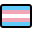
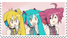
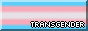
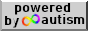